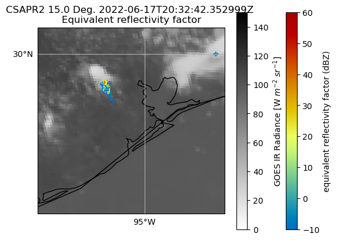
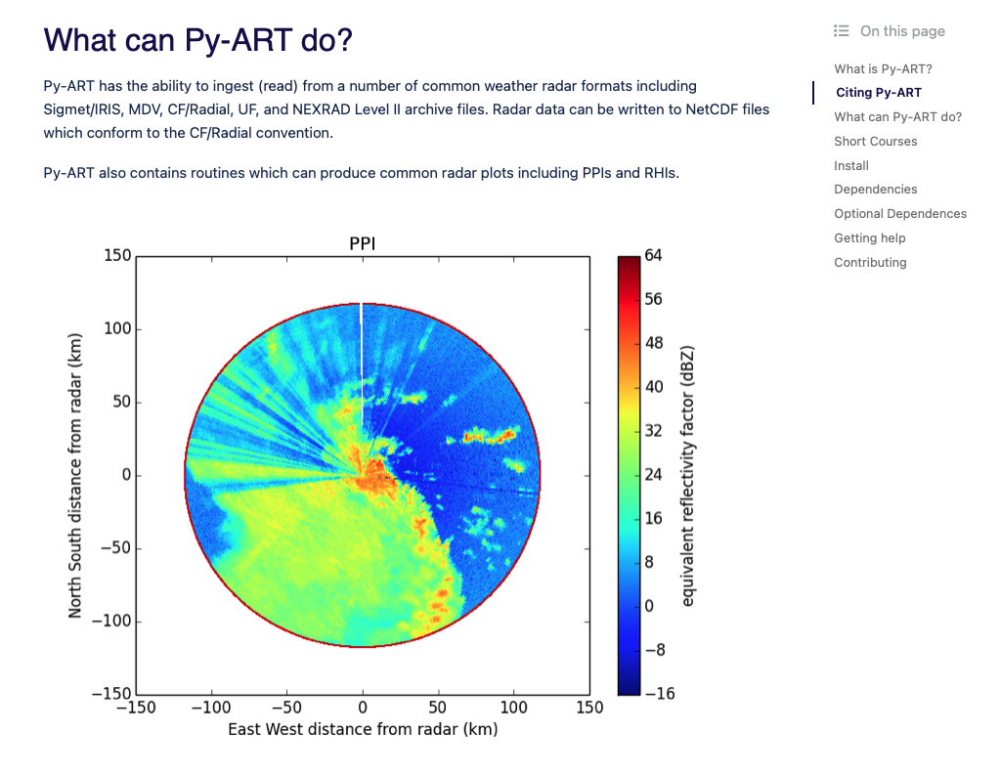

Posted in 2022
Hail Storm Visualization Using Py-ART and Pandas!
- 23 November 2022
Within this post, we will walk through how to combine radar and storm report data, creating an animation of the two!
On September 7, 2021, a strong line of thunderstorms passed through Southern Wisconsin and Northern Illinois, leaving a trail of hail and wind damage in its path.

Blending Observations from TRACER using Py-ART
- 21 October 2022
The TRacking Aerosol Convection Interactions (TRACER) field experiment was a U.S. Department of Energy IOP with the goal of studying the lifecycle of convection over Houston as well as potential aerosol impacts on this lifecycle. Houston is uniquely suited for this kind of field experiment where seabreeze convection forms off of the coast of Houston in cleaner air conditions and then approaches the more polluted Houston region. For more information about the TRACER field experiment, click here.
This post will show how to plot overlays of Texas A&M University Lightning Mapping Array data over GOES and ARM CSAPR2 data for a case of wildfire smoke entraining into developing convection sampled during July 12 and 13, 2022. In addition, we highlight a case that was tracked by CSAPR2 for 90 minutes on June 17, 2022.
Active Py-ART Development - Submitting a Pull Request (PR)
- 26 April 2022
The motivation for this blog comes from wanting to change the colorscheme within the default Py-ART documentation images to a more (color vision deficiency friendly color scheme).
Here are the images we are working with:
Fixing Weird Patterns When Plotting NEXRAD Level 3 Data
- 12 April 2022
The motivation here comes from a thread on Twitter, indicating an issue when plotting NEXRAD Level 3 radial velocity (NOU).
Here is the radar image, plotted by David (@dryglick):

Working with Vertically Pointing Radar Data Using PyART, Xarray, and hvPlot
- 21 March 2022
This notebook will walk through how to utilize existing packages in the Python ecosystem (PyART, Xarray, and hvPlot) to visualize data from a vertically pointing Ka-band radar.
By the end of this notebook, you will learn how to create the following visualization:

New Docs
- 11 March 2022
Hello All!
Welcome to our new documentation page! This is a new section within the docs meant for: